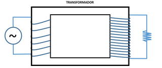

Utilize o esquema do funcionamento do transformador ideal para avaliar quais afirmações a seguir estão corretas:
I - A corrente alternada aplicada no enrolamento primário gera um fluxo magnético constante que, transmitido pelo núcleo, fornece um fluxo magnético constante no enrolamento secundário e, consequentemente, uma corrente alternada.
II - Quanto maior o número de espiras, maior será a voltagem gerada no transformador, apesar da potência nos dois enrolamentos ser igual.
III - Como a potência nos enrolamentos é a mesma, o lado de maior tensão tem a menor corrente.
|
a) I, II e III. b) I e II. |
c) II e III. d) III. |
e) II. |
a) Transformadores são dispositivos eletromagnéticos que transformam o valor da tensão elétrica alternada, aplicada em sua entrada, para uma tensão alternada diferente na saída.
b) Os transformadores podem ser usados tanto para aumentar quanto para diminuir o valor da tensão.
c) Um transformador consiste em duas bobinas enroladas no mesmo núcleo de ferro.
d) Um transformador consiste em uma bobina enrolada em dois núcleos de ferro.
e) Em transformadores com dois enrolamentos, é comum denominá-los de enrolamento primário e enrolamento secundário.
a) a diferença de potencial é a mesma e a corrente elétrica é contínua.
b) a diferença de potencial é a mesma e a corrente elétrica é alternada.
c) a diferença de potencial é menor e a corrente elétrica é alternada.
d) a diferença de potencial é maior e a corrente elétrica é alternada.
e) a diferença de potencial é maior e a corrente elétrica é contínua.
Nesse transformador:
I. O número de espiras no primário é maior que no secundário;
II. A corrente elétrica no primário é menor que no secundário;
III. A diferença de potencial no secundário é contínua.
Das afirmações acima:
|
a) Somente I é correta. b) Somente II é correta. |
c) Somente I e II são corretas. d) Somente I e III são corretas. |
e) I, II e III são corretas. |
|
a) 120 A. b) 150 A. |
c) 200 A. d) 400 A. |
e) 500 A. |